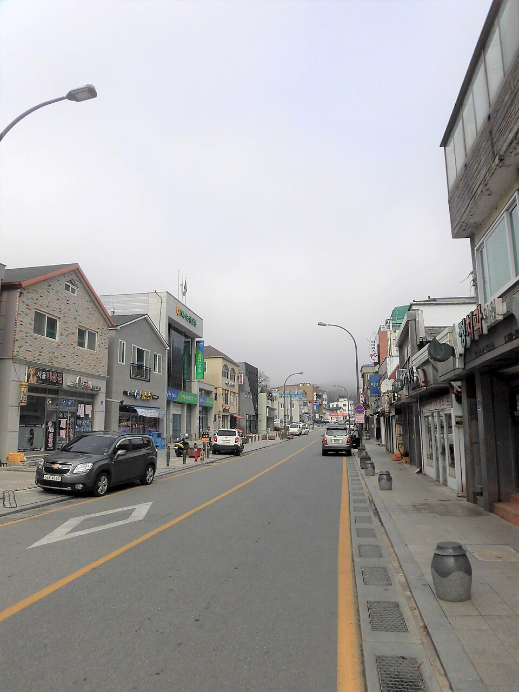

지역·대상별
태백 검정고시 — 일하면서 퇴근 후 준비하는 직장인 합격법

일을 하면서 “이제는 학력을 마무리하고 싶다”고 마음먹는 분들이 태백 검정고시 과외를 찾으세요. 가장 먼저 부딪히는 벽은 실력보다 시간입니다. 퇴근 후 지친 몸으로도 이어갈 수 있는 준비법을 정리했습니다.
“시간이 없다”는 직장인에게 맞는 방식
- 길게보다 매일 — 주말에 몰아서 5시간보다, 평일 하루 1시간을 꾸준히 이어가는 쪽이 오래 갑니다.
- 정해진 시간에 고정 — 퇴근 후 저녁 식사 뒤처럼 매일 같은 시간을 공부 시간으로 박아 둡니다.
- 짧은 틈은 암기에 — 출퇴근·쉬는 시간 10분은 한국사·사회 용어 같은 암기 과목에 씁니다.
합격선부터 알고 시작하기
검정고시는 전 과목 평균 60점 이상이면 합격이고, 평균에 못 미쳐도 60점 넘은 과목은 과목 합격으로 인정받을 수 있어요. 만점을 노릴 필요가 없다는 뜻입니다. 직장인이라면 자신 있는 과목으로 평균을 끌어올리고, 약한 과목은 기본 문제를 놓치지 않는 정도로 목표를 잡는 게 현실적이에요.
일하는 분의 과목 순서
- 1순위 수학·영어 — 쌓는 데 시간이 걸리니 컨디션이 가장 좋은 요일에 배치합니다.
- 2순위 국어 — 지문 읽기에 익숙하다면 기출 위주로 빠르게 감을 잡습니다.
- 마무리 사회·과학·한국사 — 개념 정리 후 기출 반복, 시험 직전에 집중합니다.
태백에서 이렇게 함께합니다
태백 검정고시를 준비하며 학원 시간표에 맞추기 어려우셨다면, 저희는 학원·인강이 아닌 1:1 맞춤 과외예요. 근무 형태에 맞춰 퇴근 후·주말 화상(줌) 수업이나 방문 수업으로 일정을 잡아 드립니다. 교대 근무처럼 요일이 바뀌는 분도 그때그때 조정할 수 있어요.
일하면서도 충분히 합격할 수 있어요. 근무 시간과 목표만 알려주시면, 하루 공부량까지 나눈 계획을 무료로 짜 드립니다. 시험 일정은 뉴스 첫 화면의 일정 안내를 확인해 주세요.